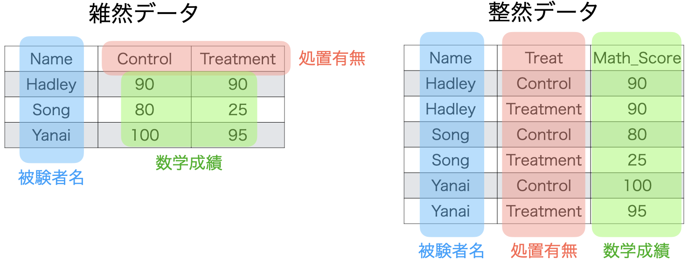

Data1 ID Name Score
1 1 Aさん 77
2 2 Bさん 89
3 3 Cさん 41Data2 ID Name Score
1 4 Xさん 98
2 5 Yさん 78データハンドリング (3)
bind_rows()を利用: 変数名が一致する必要がある
ID、Name、Scoreで構成されている。
ID、Name、Scoreの順番は一致しなくても良い（上のdata.frameの順番に調整される）。結合前
Data1 ID Name Score
1 1 Aさん 77
2 2 Bさん 89
3 3 Cさん 41Data2 ID Name Score
1 4 Xさん 98
2 5 Yさん 78結合後
bind_rows(Data1, Data2) ID Name Score
1 1 Aさん 77
2 2 Bさん 89
3 3 Cさん 41
4 4 Xさん 98
5 5 Yさん 78結合前のデータ識別変数の追加
list()でまとめ、.id引数を追加するlist()の内部では"識別変数の値" = 結合するデータと定義例) 結合後、Classという列を追加し、元々Data1だった行は"1組"、Data2だった行には"2組"を格納する。
bind_rows(list("1組" = Data1, "2組" = Data2),
.id = "Class") Class ID Name Score
1 1組 1 Aさん 77
2 1組 2 Bさん 89
3 1組 3 Cさん 41
4 2組 4 Xさん 98
5 2組 5 Yさん 78*_join(): 結合に使う識別用の変数（キー変数）が必要（以下ではCity）
結合前
Data1 City Pop Area
1 Tokyo 927 2194
2 Osaka 148 828
3 Kochi 76 7104結合前
Data2 City Food
1 Kochi Katsuo
2 Osaka Takoyaki
3 Tokyo Ramen結合後
left_join(Data1, Data2, by = "City") City Pop Area Food
1 Tokyo 927 2194 Ramen
2 Osaka 148 828 Takoyaki
3 Kochi 76 7104 Katsuo識別子は両データに含まれているが、一致しないケースがある。
left_join()
right_join()
inner_join()
full_join()
left_join()の仕組み
left_join(データ1, データ2, by = "識別用変数名")
NA）で埋められる

right_join()の仕組み
right_join(データ1, データ2, by = "識別用変数名")
NA）で埋められる

inner_join()の仕組み
inner_join(データ1, データ2, by = "識別用変数名")


full_join()の仕組み
full_join(データ1, データ2, by = "識別用変数名")
NA）で埋められる

比較 (1)
df1 <- tibble(Pref = c("東京", "大阪", "京都"),
Score = c(3.5, 4, 4.2))
df2 <- tibble(Pref = c("東京", "大阪", "高知"),
N = c(3220, 1325, 111))df1# A tibble: 3 × 2
Pref Score
<chr> <dbl>
1 東京 3.5
2 大阪 4
3 京都 4.2df2# A tibble: 3 × 2
Pref N
<chr> <dbl>
1 東京 3220
2 大阪 1325
3 高知 111比較 (2)
by = "識別用の変数名"は複数用いることも可能（例: 都道府県名&年度で結合）
by = c("識別用の変数名1", "識別用の変数名2")left_join(df1, df2, by = "Pref")# A tibble: 3 × 3
Pref Score N
<chr> <dbl> <dbl>
1 東京 3.5 3220
2 大阪 4 1325
3 京都 4.2 NAright_join(df1, df2, by = "Pref")# A tibble: 3 × 3
Pref Score N
<chr> <dbl> <dbl>
1 東京 3.5 3220
2 大阪 4 1325
3 高知 NA 111inner_join(df1, df2, by = "Pref")# A tibble: 2 × 3
Pref Score N
<chr> <dbl> <dbl>
1 東京 3.5 3220
2 大阪 4 1325full_join(df1, df2, by = "Pref")# A tibble: 4 × 3
Pref Score N
<chr> <dbl> <dbl>
1 東京 3.5 3220
2 大阪 4 1325
3 京都 4.2 NA
4 高知 NA 111Tidy data: Hadley Wickhamが提唱したデータ分析に適したデータ構造
4つの原則

原則1: 1列1変数

原則2: 1行1観察

原則3: 1セル1値
2020年8月24日という値がある場合

原則4: 1表1単位

原則4: 1表1単位
filter()関数等で、異なる単位の行を除外


雑然データから整然データへ変形をサポートするパッケージ
pivot_longer(): Wide型データからLong型データへ
pivot_wider(): Long型データからWide型データへ
separate(): セルの分割（「年月日」から「年」、「月」、「日」へ）
filter()などで除外実習用データ
Micro10.csv: 日本、韓国、モンゴル、台湾の5日間COVID-19新規感染者数
COVID_df <- read_csv("Data/Micro10.csv")
COVID_df# A tibble: 4 × 7
Country Population `2021/05/24` `2021/05/25` `2021/05/26` `2021/05/27`
<chr> <dbl> <dbl> <dbl> <dbl> <dbl>
1 Japan 126476461 2743 3918 4485 4163
2 Korea 51269185 516 699 629 587
3 Mongolia 3278290 634 680 653 785
4 Taiwan 23816775 595 539 635 670
# … with 1 more variable: `2021/05/28` <dbl>このデータの問題点
| Country | Population | 2021/05/24 | 2021/05/25 | 2021/05/26 | 2021/05/27 | 2021/05/28 |
|---|---|---|---|---|---|---|
| Japan | 126476461 | 2743 | 3918 | 4485 | 4163 | 3701 |
| Korea | 51269185 | 516 | 699 | 629 | 587 | 533 |
| Mongolia | 3278290 | 634 | 680 | 653 | 785 | 769 |
| Taiwan | 23816775 | 595 | 539 | 635 | 670 | 554 |
Wide型からLong型へ
COVID_dfの構造は?
| Country | Population | Date | New_Cases |
|---|---|---|---|
| Japan | 126476461 | 2021/05/24 | 2743 |
| Japan | 126476461 | 2021/05/25 | 3918 |
| Japan | 126476461 | 2021/05/26 | 4485 |
| Japan | 126476461 | 2021/05/27 | 4163 |
| Japan | 126476461 | 2021/05/28 | 3701 |
| Korea | 51269185 | 2021/05/24 | 516 |
| Korea | 51269185 | 2021/05/25 | 699 |
| Korea | 51269185 | 2021/05/26 | 629 |
| Korea | 51269185 | 2021/05/27 | 587 |
| Korea | 51269185 | 2021/05/28 | 533 |
| Mongolia | 3278290 | 2021/05/24 | 634 |
| Mongolia | 3278290 | 2021/05/25 | 680 |
| Mongolia | 3278290 | 2021/05/26 | 653 |
| Mongolia | 3278290 | 2021/05/27 | 785 |
| Mongolia | 3278290 | 2021/05/28 | 769 |
| Taiwan | 23816775 | 2021/05/24 | 595 |
| Taiwan | 23816775 | 2021/05/25 | 539 |
| Taiwan | 23816775 | 2021/05/26 | 635 |
| Taiwan | 23816775 | 2021/05/27 | 670 |
| Taiwan | 23816775 | 2021/05/28 | 554 |
pivot_longer(): Wide to Long
colsはdplyr::select()と同じ使い方
c()で個別の変数名を指定することも、:やstarts_with()を使うこともOK`か"で囲む
/や-など）が含まれるケースが多いデータ %>%
pivot_longer(cols = 変数が格納されている列,
names_to = "元の列名が入る変数名",
values_to = "変数の値が入る変数名")pivot_longer(): WideからLongへ
cols = starts_with("2020")もOKCOVID_Long <- COVID_df %>%
pivot_longer(cols = "2021/05/24":"2021/05/28",
names_to = "Date",
values_to = "New_Cases")
COVID_Long# A tibble: 20 × 4
Country Population Date New_Cases
<chr> <dbl> <chr> <dbl>
1 Japan 126476461 2021/05/24 2743
2 Japan 126476461 2021/05/25 3918
3 Japan 126476461 2021/05/26 4485
4 Japan 126476461 2021/05/27 4163
5 Japan 126476461 2021/05/28 3701
6 Korea 51269185 2021/05/24 516
7 Korea 51269185 2021/05/25 699
8 Korea 51269185 2021/05/26 629
9 Korea 51269185 2021/05/27 587
10 Korea 51269185 2021/05/28 533
11 Mongolia 3278290 2021/05/24 634
12 Mongolia 3278290 2021/05/25 680
13 Mongolia 3278290 2021/05/26 653
14 Mongolia 3278290 2021/05/27 785
15 Mongolia 3278290 2021/05/28 769
16 Taiwan 23816775 2021/05/24 595
17 Taiwan 23816775 2021/05/25 539
18 Taiwan 23816775 2021/05/26 635
19 Taiwan 23816775 2021/05/27 670
20 Taiwan 23816775 2021/05/28 554pivot_wider(): LongからWideへ
# A tibble: 4 × 7
Country Population `2021/05/24` `2021/05/25` `2021/05/26` `2021/05/27`
<chr> <dbl> <dbl> <dbl> <dbl> <dbl>
1 Japan 126476461 2743 3918 4485 4163
2 Korea 51269185 516 699 629 587
3 Mongolia 3278290 634 680 653 785
4 Taiwan 23816775 595 539 635 670
# … with 1 more variable: `2021/05/28` <dbl>separate(): 列の分割
COVID_LongのDate列をYear、Month、Dayに分けたい
Date列を"/"を基準に分割するデータ %>%
separate(col = "分割する列名",
into = c("分割後の列名1", "分割後の列名2", ...),
sep = "分割する基準")separate(): 列の分割
# A tibble: 20 × 6
Country Population Year Month Day New_Cases
<chr> <dbl> <chr> <chr> <chr> <dbl>
1 Japan 126476461 2021 05 24 2743
2 Japan 126476461 2021 05 25 3918
3 Japan 126476461 2021 05 26 4485
4 Japan 126476461 2021 05 27 4163
5 Japan 126476461 2021 05 28 3701
6 Korea 51269185 2021 05 24 516
7 Korea 51269185 2021 05 25 699
8 Korea 51269185 2021 05 26 629
9 Korea 51269185 2021 05 27 587
10 Korea 51269185 2021 05 28 533
11 Mongolia 3278290 2021 05 24 634
12 Mongolia 3278290 2021 05 25 680
13 Mongolia 3278290 2021 05 26 653
14 Mongolia 3278290 2021 05 27 785
15 Mongolia 3278290 2021 05 28 769
16 Taiwan 23816775 2021 05 24 595
17 Taiwan 23816775 2021 05 25 539
18 Taiwan 23816775 2021 05 26 635
19 Taiwan 23816775 2021 05 27 670
20 Taiwan 23816775 2021 05 28 554列の分割（番外編）: 特定の記号がない場合
例) City_DataのCity列が「都道府県名+市区町村」
# A tibble: 4 × 2
City Pop
<chr> <dbl>
1 北海道音威子府村 693
2 大阪府高槻市 347424
3 広島県府中市 36471
4 鹿児島県指宿市 38207正則表現（regular expression）の知識が必要
City_Data %>%
# 任意の2文字の後に「都道府県」のいずれかが来るか、
# 任意の3文字の後に「県」が来たら、そこまでをブロック1、残りをブロック2とする
# Cityの値を「ブロック1-ブロック2」に置換する
mutate(City = str_replace(City, "^(.{2}[都道府県]|.{3}県)(.+)",
"\\1-\\2")) %>%
# 「-」を基準に列を分割
separate(col = "City", into = c("Pref", "City"), sep = "-")# A tibble: 4 × 3
Pref City Pop
<chr> <chr> <dbl>
1 北海道 音威子府村 693
2 大阪府 高槻市 347424
3 広島県 府中市 36471
4 鹿児島県 指宿市 38207{tidyr}と{dplyr}を組み合わせることも可能
COVID_df %>%
pivot_longer(cols = "2021/05/24":"2021/05/28",
names_to = "Date",
values_to = "New_Cases") %>%
mutate(New_Case_per_1M = New_Cases / Population * 1000000) %>%
group_by(Country) %>%
summarise(New_Case_per_1M = mean(New_Case_per_1M))# A tibble: 4 × 2
Country New_Case_per_1M
<chr> <dbl>
1 Japan 30.1
2 Korea 11.6
3 Mongolia 215.
4 Taiwan 25.1